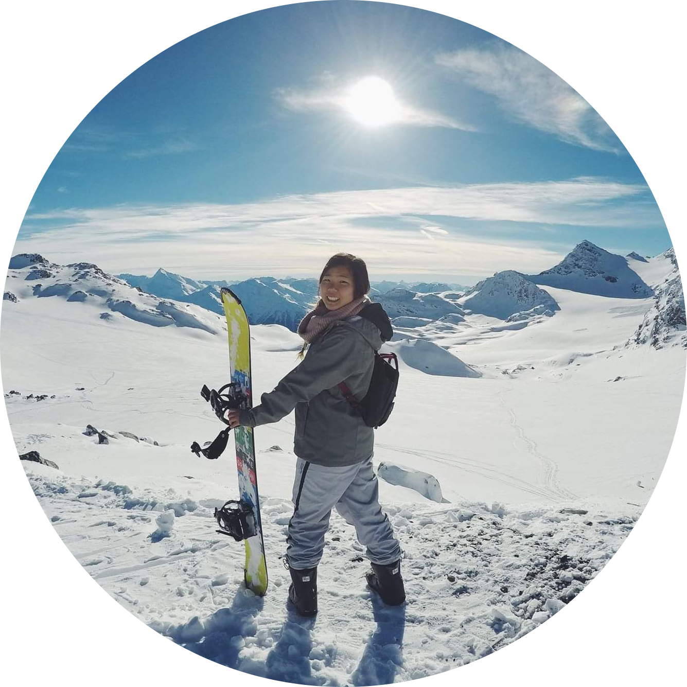

Now
I’m thankful for the invaluable insights I’ve gained from being more naturally academic and building my artistic side. From my unique combination of education and experience, I have and continue to develop my problem solving skills. As an avid book worm, my empathy and perspective have only grown wider and deeper. As the designated family event planner, I find joy in putting together enjoyable experiences for everyone. As a designer, I explore possibilities and dissect problems to find the best solution.
